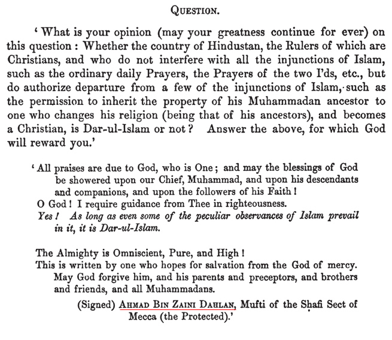
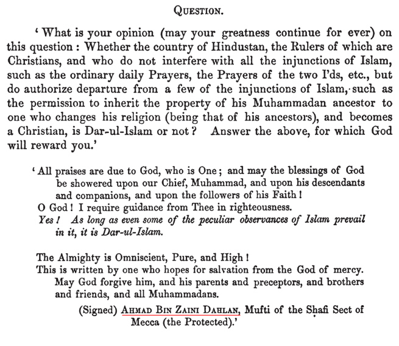

The Wahabis – Zainee Dahlans Real Opinion & The British
Posted: Tue Jan 31, 2017 10:09 pm
Compiled, Translated and Annotated
Abu Hibbaan & Abu Khuzaimah Ansaari
Some soofee idiot on national british media in his sheer ignorance and delusional misguidance uttered the wahabis are responsible for the horrific crime that took place last week, as opposed to saying such individuals were acting on their own accord which had nothing to do with terrorism or any link or association with Islaam whatsoever. Rather you will find them attacking the salafis at any cost. We have and continue to say such takfiri tendencies have no link, correlation or association with Islaam or its understanding.
We did find what the soofee churchfather Ahman bin Zainee Dahlan d.1883CE, the one who authored a book against the salafis titled, “ad-Durar us-Saniyya Fee Radd Alal Wahhabiyyah” who was comprehensively answered by al-Allaamah Basheer Sehsawaanee in “Siyanatul-Insaan An Waswasah Shaikh Dahlan” Dahlan said the following in a book which was published in 1871CE (yes almost 142 years ago) under the service of her majesty civil service for bengal ie the former Queen Victoria,
Read and question your own soofee churchfather, and the allegation that wahabis were created by the british or Saudi Arabia was created by the british is all futile when in essence the soofee churchfathers were sipping tea with…..

hmmm this fatwaa alone requires a few pages, maybe some other time!!!
http://www.salafiri.com/the-wahabis-zai ... e-british/
Abu Hibbaan & Abu Khuzaimah Ansaari
Some soofee idiot on national british media in his sheer ignorance and delusional misguidance uttered the wahabis are responsible for the horrific crime that took place last week, as opposed to saying such individuals were acting on their own accord which had nothing to do with terrorism or any link or association with Islaam whatsoever. Rather you will find them attacking the salafis at any cost. We have and continue to say such takfiri tendencies have no link, correlation or association with Islaam or its understanding.
We did find what the soofee churchfather Ahman bin Zainee Dahlan d.1883CE, the one who authored a book against the salafis titled, “ad-Durar us-Saniyya Fee Radd Alal Wahhabiyyah” who was comprehensively answered by al-Allaamah Basheer Sehsawaanee in “Siyanatul-Insaan An Waswasah Shaikh Dahlan” Dahlan said the following in a book which was published in 1871CE (yes almost 142 years ago) under the service of her majesty civil service for bengal ie the former Queen Victoria,
Read and question your own soofee churchfather, and the allegation that wahabis were created by the british or Saudi Arabia was created by the british is all futile when in essence the soofee churchfathers were sipping tea with…..

hmmm this fatwaa alone requires a few pages, maybe some other time!!!
http://www.salafiri.com/the-wahabis-zai ... e-british/